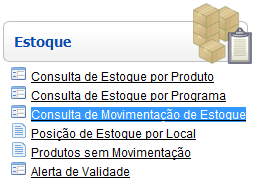
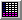

Movimentação de Estoque por Produto [ Voltar ] O fomulário "Movimentação de Estoque por Produto" encontra-se dentro do menu "Estoque", com o nome "Consulta de Movimentação de Estoque". 
Após o clique, a seguinte tela será exibida:
Siga os seguintes passos para o preechimento deste formulário:
1º Passo: informe o "Produto" para o qual deseja
visualizar o histórico. Clique no botão Observação: no topo da tela, selecione uma das pesquisas salvas como favorita. Para produtos, as pesquisas possíveis são: a) Padrão - esta
pesquisa inclui todos os produtos cadastrados;
b) Medicamentos - pesquisa que exibe apenas os medicamentos; c) Materiais Médico-Hospitalares - pesquisa de materiais médico-hospitalares, apenas; e d) Todos Produtos - pesquisa detalhada de todos os produtos cadastrados.
2º Passo:
informe o "Local" para este relatório. Clique no botão Observação: no topo da tela de pesquisa, selecione o tipo de pesquisa adequado: a) Padrão - esta pesquisa inclui todos os locais cadastrados no sistema
b) Locais de Estoque - esta pesquisa exibe apenas os locais de estoque
3° Passo: especifique as datas inicial e final. Clique no botão  [Data] ao lado dos campos "Data inicial" e "Data final" para selecionar, com um clique, as datas do período desejado. 4° Passo: especifique se os resultados devem ser mostrados de maneira completa ou simplificada. Este campo permite que você selecione o nivel de detalhamento mostrado nos resultados. A diferença entre as exibições "Completa" e "Simplificada" é que na primeira são apresentadas as movimentações com a discriminação por lotes e validades. No caso da forma "Simplificada", são apresentados os valores gerais do produto no estoque, sem os detalhes dos lotes. 5º Passo: opção "Incluir movimentações entre endereços". Se desejar que os resultados incluam movimentações entre endereços, marque esta opção "Incluir movimentações entre endereços". Se esta opção for deixada em branco, apenas recebimentos e saídas serão listados. 6º Passo: opção de filtro por "Local" e/ou "Programa". Se desejar que os resultados sejam filtrados de modo a que mostrem as movimentações relacionadas a determinados locais ou programas, preencha estes campos. O campo de "Lote" não tem ferramenta de pesquisa, e por isso, se desejar inserir um número de lote, deverá fazê-lo manualmente. Já o campo de "Programa" abre uma janela de pesquisa onde será possível selecionar o programa desejado. Obs: Os campos de "Local" e "Programa" só ficam disponíveis no tipo de visualização "Completo". A visualização simplificada não considera nem local nem programa, e por isso nesse caso será impossível inserir dados nesses dois campos.
7° Passo: clique no
botão
|
 [Procurar] ao lado do campo
[Procurar] ao lado do campo  para gerar o
histórico de movimentações.
para gerar o
histórico de movimentações.